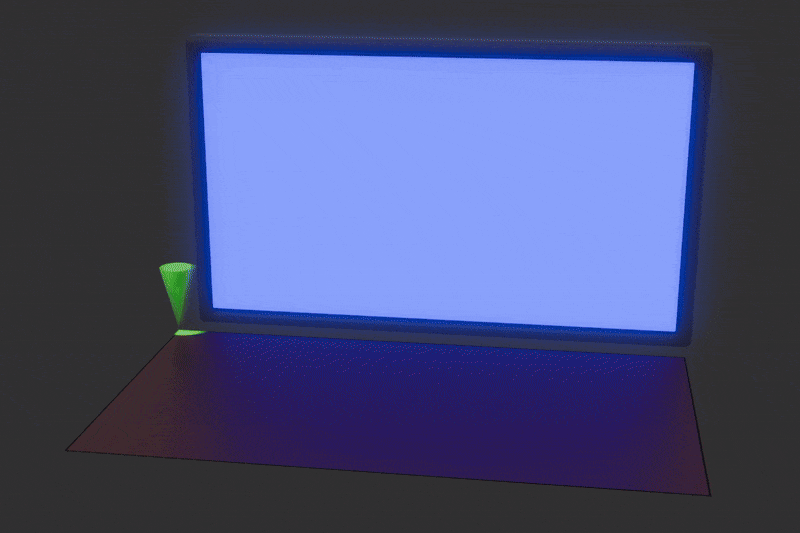

Clearing the Screen¶
First things first, let us open a window, if you've worked with Raylib or SDL before, you may have constructed the main loop yourself such as:
package src
import rl "vendor:raylib"
main :: proc() {
rl.InitWindow(1280, 720, "My Window")
rl.SetTargetFPS(60)
for !rl.WindowShouldClose() {
rl.BeginDrawing()
rl.ClearBackground(rl.BLACK)
rl.EndDrawing()
}
rl.CloseWindow()
}
This works fine on desktop OSes such as Windows, macOS and Linux. However, if you try to compile the same code for the web or mobile and then run the compiled program, the program will crash or freeze when you try to run it. Why is that?
On desktop platforms, your program is the boss, the OS gives your program a thread and your program takes complete control of it.
flowchart TD
OS["Desktop OS"]
Thread["Application Thread"]
Game["Your Program"]
Loop["Your Main Loop"]
OS -->|"gives your program a thread"| Thread
Thread --> Game
Game --> Loop
Loop -->|"process input"| Loop
Loop -->|"update game"| Loop
Loop -->|"render"| Loop
Loop -->|"repeat"| LoopOn the web, the story is different. Javascript and the DOM (The system that draws the actual webpage) are single-threaded. Everything happening on a webpage must happen on that single thread like processing inputs and drawing graphics. However, if your program runs a main loop itself, the browser is "locked out" and can't check if the user clicked a webpage element or draw anything, so the entire tab you are on instantly freezes.
So below I have a diagram showing you what happens if you don't block the web page with your own loop.
flowchart TD
Browser["Browser Event Loop"]
Game["Your Game"]
Update["Update + Render"]
Browser -->|"calls your code"| Game
Game --> Update
Update -->|"returns control"| Browser
Browser -->|"continues handling input, DOM, etc."| BrowserNow if you put your own main loop:
flowchart TD
Browser["Browser Event Loop"]
Game["Your Game"]
Loop["while (true)"]
Browser -->|"calls your code"| Game
Game --> Loop
Loop -->|"keeps running"| Loop
Game -.->|"blocked"| BrowserThats a no-no we don't want to block the current web page with our main loop.
On mobile, the OS expects your program to listen for signals "You are starting up" or "You are being sent to the background because the user got a phone call." If you use a main loop in your program, the app stops listening to the signals given by the OS. After a while of the program not listening, the OS just terminates your program.
Lets see what happens if you don't block mobile with your own main loop:
flowchart TD
OS["Mobile OS"]
Events["Events"]
App["Your Application"]
OS --> Events
Events -->|"event"| App
App -->|"respond"| EventsNow if you do block mobile with your own main loop:
flowchart TD
OS["Mobile OS"]
Events["Events"]
App["Your Application"]
Loop["Your Main Loop"]
OS --> Events
Events --> App
App --> Loop
Loop -->|"blocks"| App
App -.->|"can't respond"| EventsIn short, while on desktop platforms you handle the main loop, on web and mobile, the browser/OS handles the main loop. You might be thinking at this point: "Damn bruh... so I have to write my code differently for each platform."
Worry not! As this is where "SDL callbacks" come in, by passing your code into functions like app_init, app_iterate, app_event, app_quit, SDL can use your functions and handle those platform differences for you (On desktop it constructs a main loop and calls those functions in the main loop. On mobile it calls those functions when the OS gives your program the corresponding events), allowing you to easily port your code to variety of platforms.
Lets see how to do these "SDL callbacks."
package src
import "base:runtime"
import "core:c"
import sdl "vendor:sdl3"
window: ^sdl.Window
main :: proc() {
sdl.RunApp(0, nil, app_main, nil)
}
@(export)
app_main :: proc "c" (argc: c.int, argv: [^]cstring) -> c.int {
return sdl.EnterAppMainCallbacks(argc, argv, app_init, app_iterate, app_event, app_quit)
}
@(export)
app_init :: proc "c" (appstate: ^rawptr, argc: c.int, argv: [^]cstring) -> sdl.AppResult {
return .CONTINUE
}
@(export)
app_iterate :: proc "c" (appstate: rawptr) -> sdl.AppResult {
return .CONTINUE
}
@(export)
app_event :: proc "c" (appstate: rawptr, event: ^sdl.Event) -> sdl.AppResult {
return .CONTINUE
}
@(export)
app_quit :: proc "c" (appstate: rawptr, result: sdl.AppResult) {
context = global_context
}
As you might realize this won't open a window by itself because there wasn't any code to explicitly create the window at all. So let us do that.
package src
import "base:runtime"
import "core:c"
import sdl "vendor:sdl3"
WINDOW_WIDTH :: 1280
WINDOW_HEIGHT :: 720
global_context: runtime.Context
window: ^sdl.Window
main :: proc() {
sdl.RunApp(0, nil, app_main, nil)
}
@(export)
app_main :: proc "c" (argc: c.int, argv: [^]cstring) -> c.int {
context = global_context
return sdl.EnterAppMainCallbacks(argc, argv, app_init, app_iterate, app_event, app_quit)
}
@(export)
app_init :: proc "c" (appstate: ^rawptr, argc: c.int, argv: [^]cstring) -> sdl.AppResult {
context = global_context
ok := sdl.Init({.VIDEO})
assert(ok)
window = sdl.CreateWindow("Handmade GPUer", WINDOW_WIDTH, WINDOW_HEIGHT, {})
assert(window != nil)
return .CONTINUE
}
@(export)
app_iterate :: proc "c" (appstate: rawptr) -> sdl.AppResult {
context = global_context
return .CONTINUE
}
@(export)
app_event :: proc "c" (appstate: rawptr, event: ^sdl.Event) -> sdl.AppResult {
context = global_context
#partial switch event.type {
case .QUIT:
return .SUCCESS
}
return .CONTINUE
}
@(export)
app_quit :: proc "c" (appstate: rawptr, result: sdl.AppResult) {
context = global_context
sdl.DestroyWindow(window)
sdl.Quit()
}
Now if you ran the code above, you might be thinking I was a liar, the code above doesn't actually work at all and you are seeing no window at all. Well, that is actually to be expected because there is nothing to "present," we haven't drawn anything yet. So, lets clear the background. However before then lets learn a few concepts.
GPU Device¶
The GPU device is the software representation of the actual GPU(s) on your computer, SDL provides this interface so you can send the GPU commands to do stuff like clearing the screen or drawing textures.
flowchart TD
Code["Your Code"]
Device["GPU Device"]
Driver["GPU Driver"]
GPU["Physical GPU"]
Code -->|"create texture"| Device
Code -->|"draw this"| Device
Code -->|"run shader"| Device
Device --> Driver
Driver --> GPUGPU Driver¶
Seeing the diagram above, you might be asking: what the heck is a GPU driver? Basically, OpenGL, Vulkan, DirectX11 are all GPU APIs they are just specifications defining function names, what those functions do and what those functions return. Meanwhile, GPU drivers are the implementation of those APIs usually done by the GPU manufacturers themselves, such as AMD.
flowchart TD
OpenGL["OpenGL"]
Functions["glCreateShader()\nglCreateProgram()\nglGenBuffers()"]
AMD["AMD Implementation"]
NVIDIA["NVIDIA Implementation"]
OpenGL -->|"Yo GPU manufacturers I got these functions I need yall to implement"| Functions
Functions -->|"I gotchu bro"| AMD
Functions -->|"Me too bruh"| NVIDIASwapchain¶
The idea of a swapchain is that you have a image that you render to and an image that you display then after a frame is finished those two images swap roles. Below is a visual demonstration of what a swapchain is.

The reason we do this is because if we don't the user will see screen tearing because the GPU is updating display memory while the monitor is reading it.

Command Buffer¶
A command buffer is a list of instructions that gets sent to the GPU.
flowchart TD
Code["Your Code"]
CB["Command Buffer"]
List["Set shader\nSet texture\nDraw 100 vertices"]
GPU["GPU"]
Code --> |"Adds instructions into"| CB
CB --> List
List -->|"Submit all at once"| GPUThe reason we do this is because we don't want the CPU to be constantly waiting around for the GPU:
Color Target (Aliases: Color Attachment, Render Target, RTV)¶
A color target is the image that the GPU is going to write the colors of the rendered pixels to. Suppose you are trying to render this:

The GPU needs somewhere to put those pixels.
In a typical app, the color target will be the swapchain image.
Render Pass¶
A render pass is a section where you tell the GPU the color targets you are going to render to. You can think of it like a container.
Add draw triangle command
Add draw sprites command
Add draw UI command
Now lets see how to clear the background.
package src
import "base:runtime"
import "core:c"
import sdl "vendor:sdl3"
WINDOW_WIDTH :: 1280
WINDOW_HEIGHT :: 720
global_context: runtime.Context
window: ^sdl.Window
gpu_device: ^sdl.GPUDevice
main :: proc() {
sdl.RunApp(0, nil, app_main, nil)
}
@(export)
app_main :: proc "c" (argc: c.int, argv: [^]cstring) -> c.int {
context = global_context
return sdl.EnterAppMainCallbacks(argc, argv, app_init, app_iterate, app_event, app_quit)
}
@(export)
app_init :: proc "c" (appstate: ^rawptr, argc: c.int, argv: [^]cstring) -> sdl.AppResult {
context = global_context
ok := sdl.Init({.VIDEO})
assert(ok)
window = sdl.CreateWindow("Handmade GPUer", WINDOW_WIDTH, WINDOW_HEIGHT, {})
assert(window != nil)
gpu_device = sdl.CreateGPUDevice({.SPIRV, .DXIL, .MSL}, ODIN_DEBUG, nil)
assert(gpu_device != nil)
// We have to claim window for GPU device because the GPU device doesn't automatically know which window to render to.
ok = sdl.ClaimWindowForGPUDevice(gpu_device, window)
assert(ok)
return .CONTINUE
}
@(export)
app_iterate :: proc "c" (appstate: rawptr) -> sdl.AppResult {
context = global_context
command_buffer := sdl.AcquireGPUCommandBuffer(gpu_device)
assert(command_buffer != nil)
swapchain_texture: ^sdl.GPUTexture
if sdl.WaitAndAcquireGPUSwapchainTexture(
command_buffer,
window,
&swapchain_texture,
nil,
nil,
) {
// A swapchain texture might be nil if the window is minimized
if swapchain_texture != nil {
color_target := sdl.GPUColorTargetInfo {
texture = swapchain_texture,
clear_color = {0.1, 0.2, 0.4, 1.0},
load_op = .CLEAR,
store_op = .STORE,
}
render_pass := sdl.BeginGPURenderPass(command_buffer, &color_target, 1, nil)
sdl.EndGPURenderPass(render_pass)
}
}
ok := sdl.SubmitGPUCommandBuffer(command_buffer)
assert(ok)
return .CONTINUE
}
@(export)
app_event :: proc "c" (appstate: rawptr, event: ^sdl.Event) -> sdl.AppResult {
context = global_context
#partial switch event.type {
case .QUIT:
return .SUCCESS
}
return .CONTINUE
}
@(export)
app_quit :: proc "c" (appstate: rawptr, result: sdl.AppResult) {
context = global_context
sdl.ReleaseWindowFromGPUDevice(gpu_device, window)
sdl.DestroyGPUDevice(gpu_device)
sdl.DestroyWindow(window)
sdl.Quit()
}
Congratulations! You have now rendered a dark blue background!